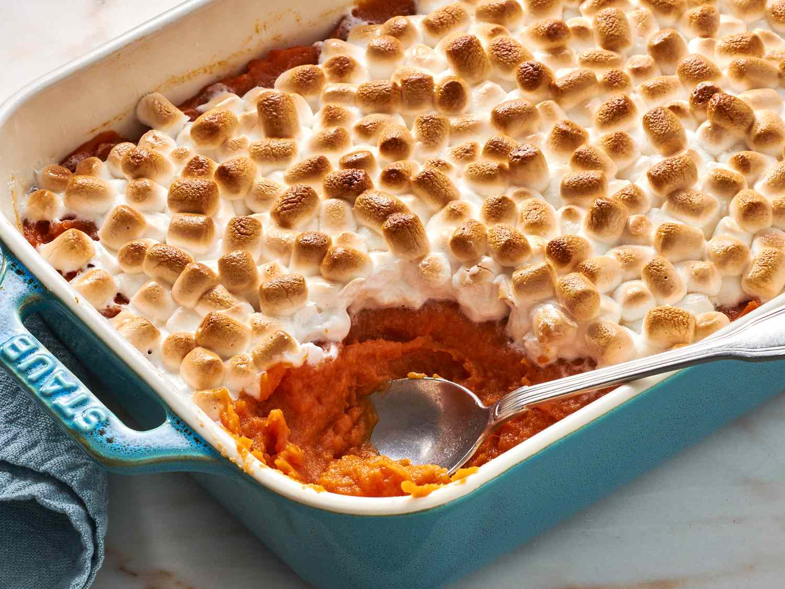

Sweet Potato Casserole

This sweet potato casserole with marshmallows toes the line between side dish and dessert — and we wouldn't have it any other way. Pureed sweet potatoes are blended with sugar and spices, then topped with marshmallows and baked to sweet, gooey perfection.
INGREDIENTS
- 5 sweet potatoes, peeled and sliced
- 1/2 cup packed brown sugar
- 1/4 cup butter
- 3 tbsp orange juice
- 1 pinch ground cinnamon
- 1 (10.5 ounce) package miniature marshmallows
INSTRUCTIONS
- Gather all ingredients, and preheat the oven to 350 degrees F (175 degrees C).
- Place sweet potatoes in a large saucepan with enough water to cover. Bring to a boil and cook until tender, about 15 minutes. Remove from heat, drain, and mash.
- Place mashed sweet potatoes in a large bowl. Add brown sugar, margarine, orange juice, and cinnamon; mix with an electric mixer until blended.
- Spread evenly into a 9x13-inch baking dish. Sprinkle marshmallows over top.
- Bake in the preheated oven until casserole is heated through and marshmallows are puffed and golden brown, 25 to 30 minutes.